Introduction
This report has been prepared to provide a detailed information of my work on “CSY 1018 Assessment I” of Web Development. I was supposed to create my professional website having six (6) webpages by using HTML and CSS.
About my choices and evidience of group work
Before I designed my website, I visited various personal and professional websites through which I gained concepts on designs. In addition to this, I had discussions with a group of friends and a module leader. I acquired many new ideas via these discussions. After obtaining the required visualization for my website, I created a wireframe (sketch) for my website which I will include below. Then, I started to design my website. Before selecting final framework, various frameworks were considered. I tried various color combination on the framIework and finally concluded with best suited colors. I tried not only focusing on design but also on the quality content of my websites. I attempted to improve my website performance as well. Most of us aware with the fact that nowadays, more than 60% of people prefer to use mobile phones than desktop. Regarding convenience, people try to get their task done via their mobile phones rather than on desktop. Hence in response to that fact, I made my website mobile friendly as well as desktop friendly.
Experiene of learning Web Development
I had a fruitful experience in learning from this first term of my Web Development module. There was a total of 11-12 weeks of classes. Each week had its theory and practical classes. My experience boosted up slowly with each topic. My learning experience began with basic web development and designing classes. I learnt how to use Git, the shell/ command line and the text editor. I was then able to level up my knowledge a little bit with Git hub and basic of HTML and CSS. First, I learnt about creating repository in git hub and different commands like git-push, git-pull, git-clone. I then gained further HTML and CSS knowledge. I was given a chance to evaluate the ‘Ottergram’ project and cover some more advanced CSS by using display and positioning properties with basic use of flexbox property.
On the 4th week of the term, I studied advanced properties of CSS. It included studying the layouts of page, different properties of ‘flexbox property’. I retained the knowledge on “Responsive Web Design with Media Queries” on week 5. As I named already 60% of people preferring to complete their task in mobile phones than in desktops, it helps me to enhance my ability to generate responsive websites. On 6th week, I had an opportunity to learn about material design and different CSS3 properties in details. With this my ability to visualize the websites and skills on material design had improved.
My experience reached further on advanced level with the introduction of topic “HTML Forms and Form Validation”. With this course, I got more confident dealing with creation and validation of form as we were introduced a java script as well on week 7 and 8. On week 9th, I was to observe different trending websites. After various researches, this enhanced my knowledge on recent trends of webpage design. Thus, I learned many new things on websites gradually and my improvements were obvious.
Screenshots
Here are screenshots of some websites I visited before designing my wireframes/ sketch of websites.
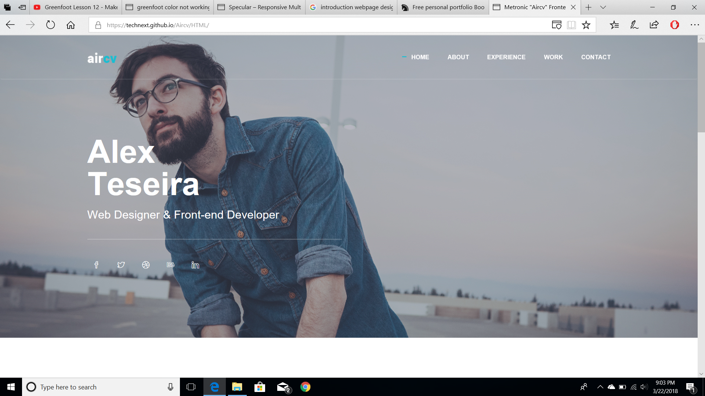 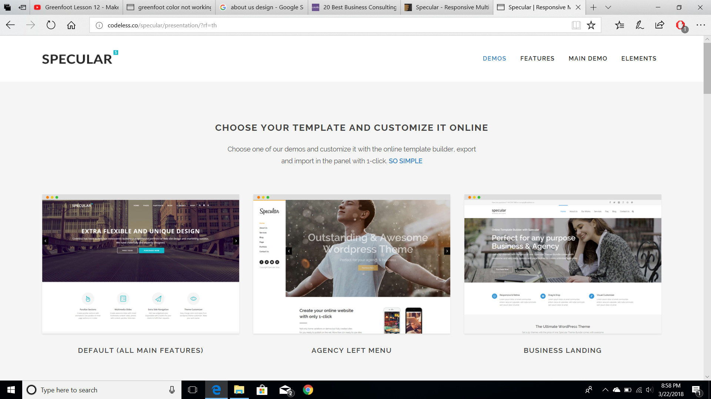 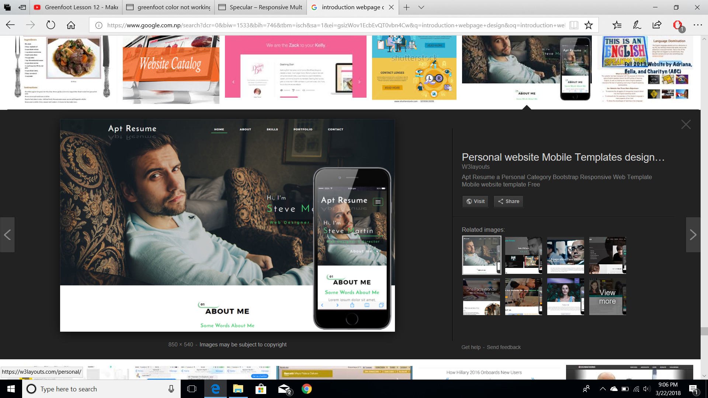Wireframes
The sketch of my websites are mentioned below.
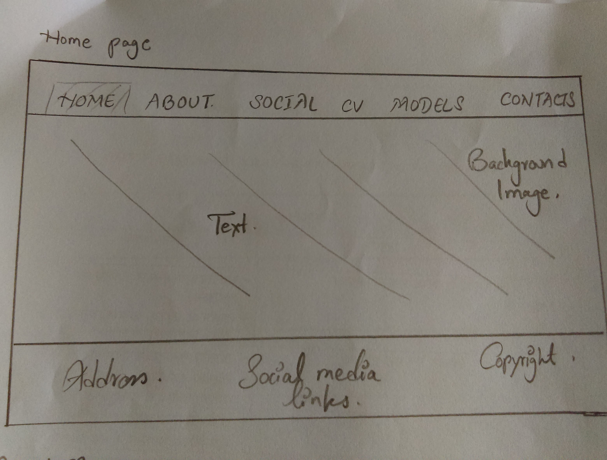 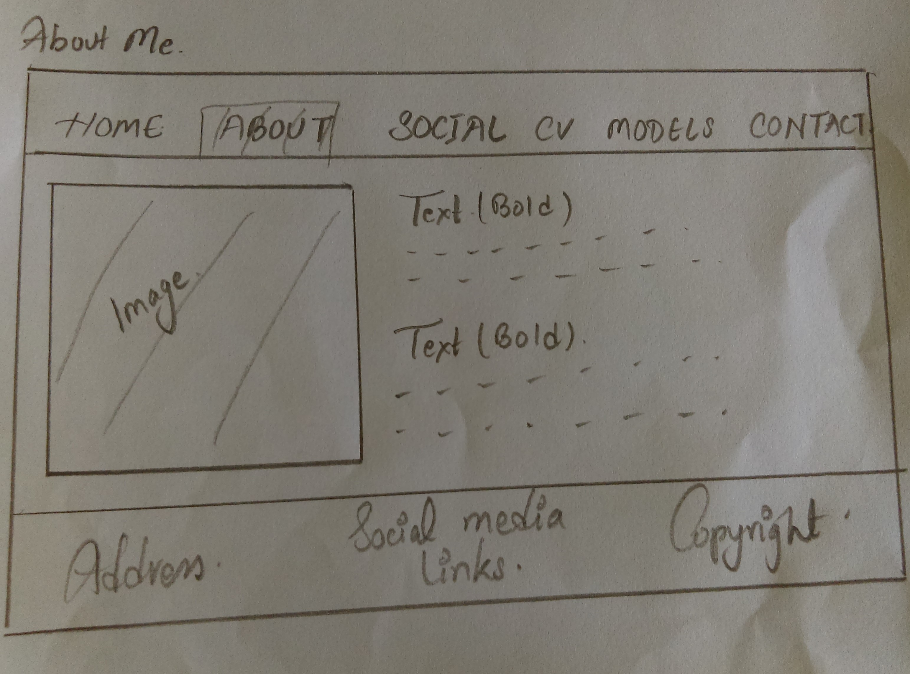 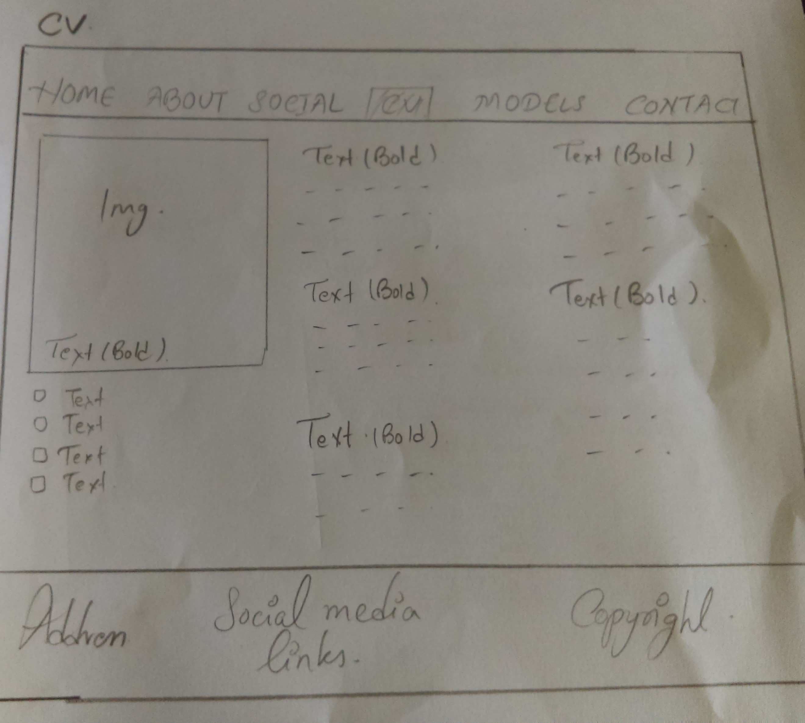 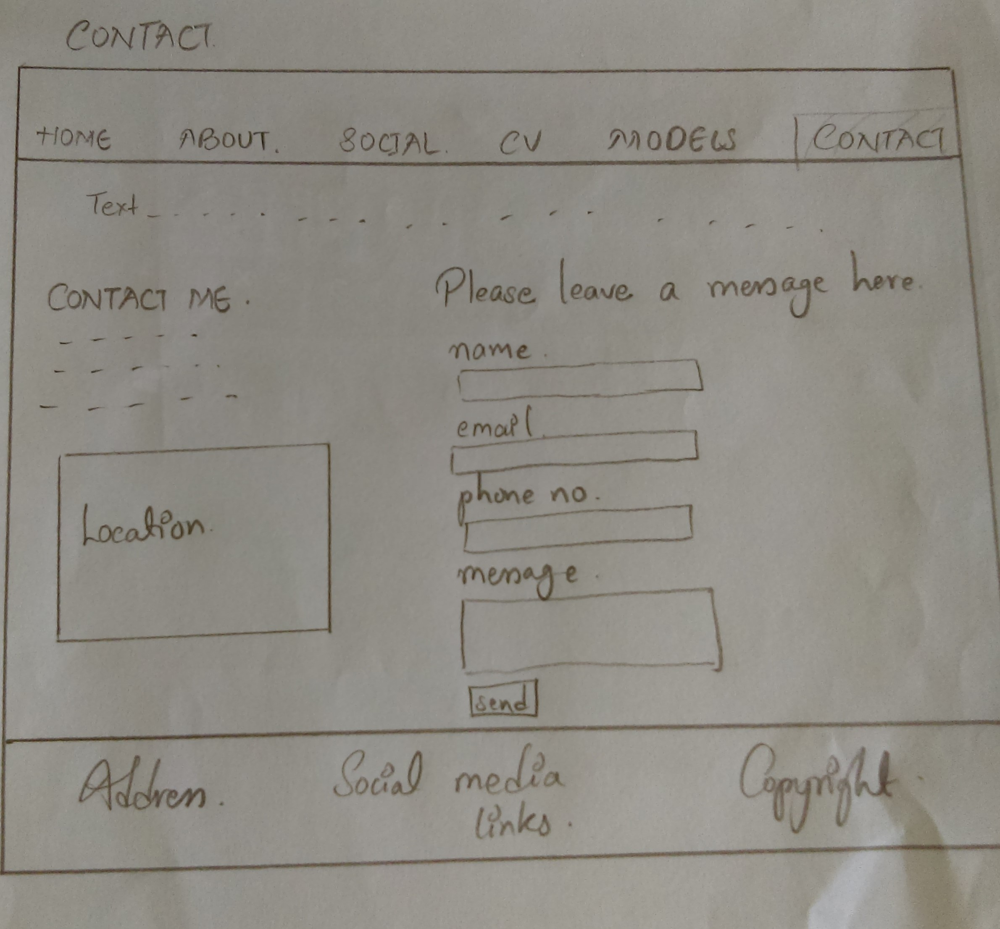 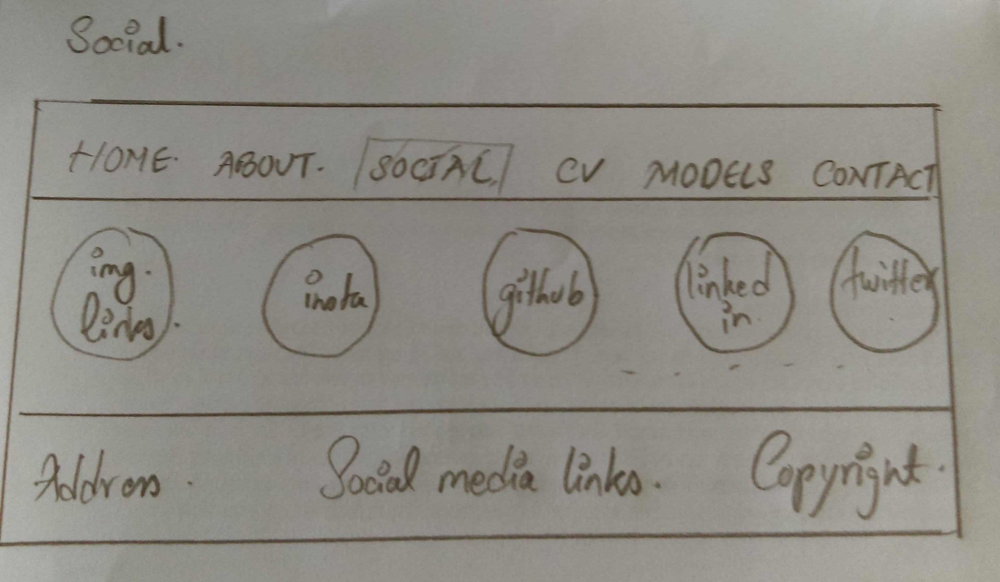Conclusion
At last, with the help of peers, module leader, and educational websites named w3schools , I completed my given task of making a professional websites. I fullfilled all the requirements given to us. However, my website is not that attractive. It is simple. If I had some more time for my assignment, I would have make my website a bit more attractive using some more css properties.
References
W3schools (2018). CSS Tutorial. [online] Available at:
https://www.w3schools.com/css/default.asp [Accessed 8 Apr. 2018].
W3schools (2018). HTML Tutorial. [online] Available at:
https://www.w3schools.com/html/default.asp [Accessed 4 Apr. 2018].
Validation
The screenshots of my html and css validation are as follows:
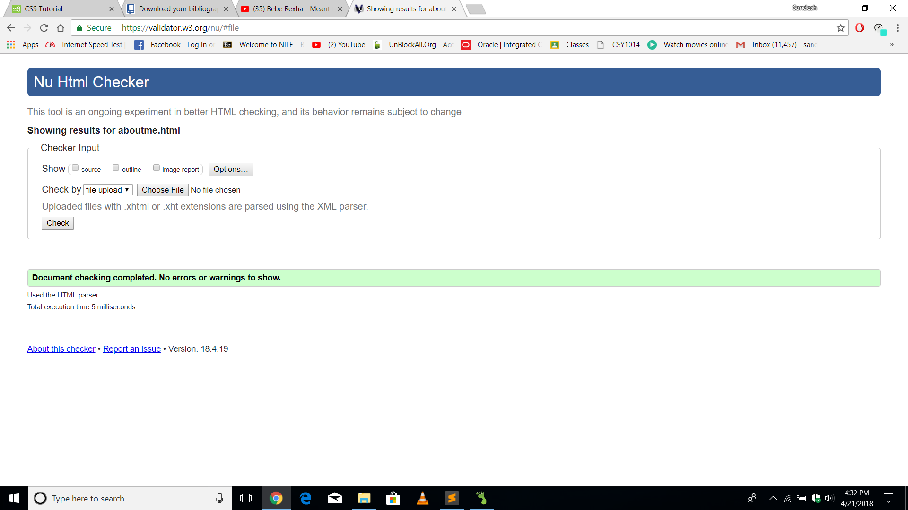 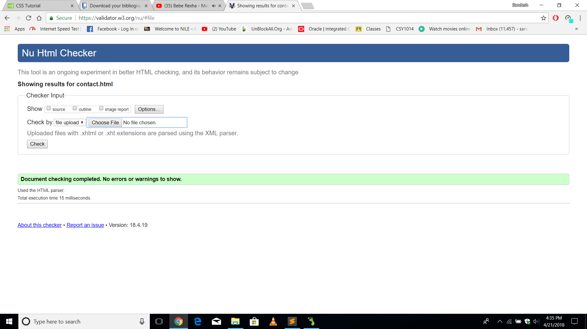.png)
 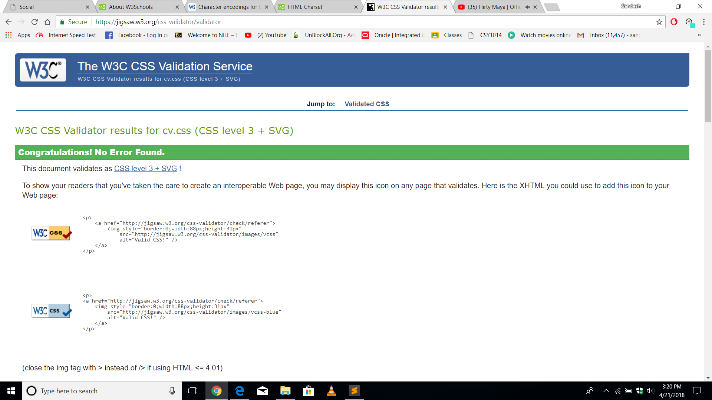
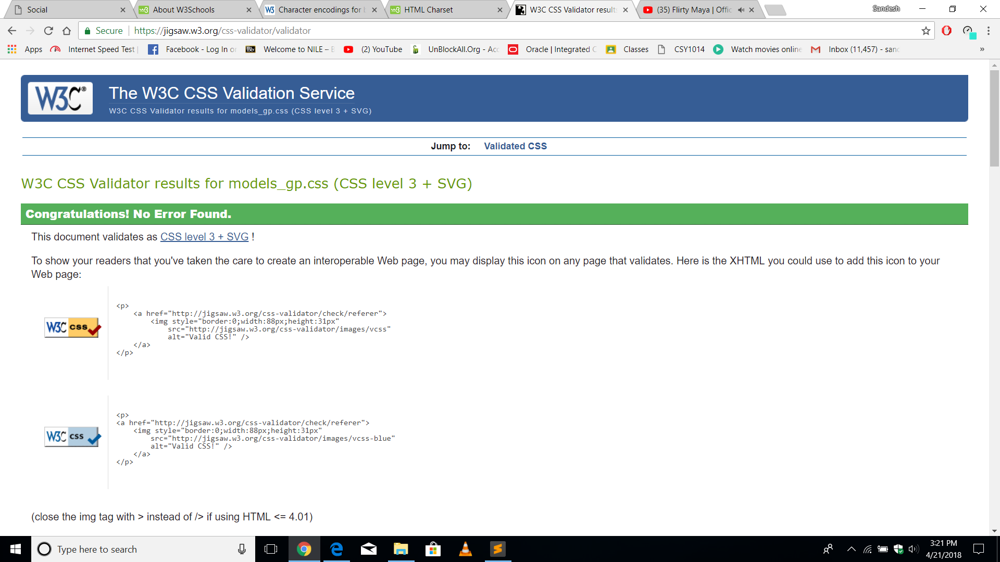
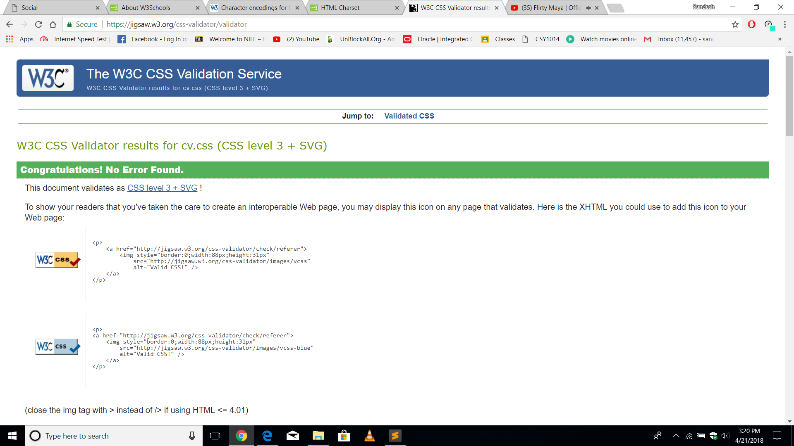
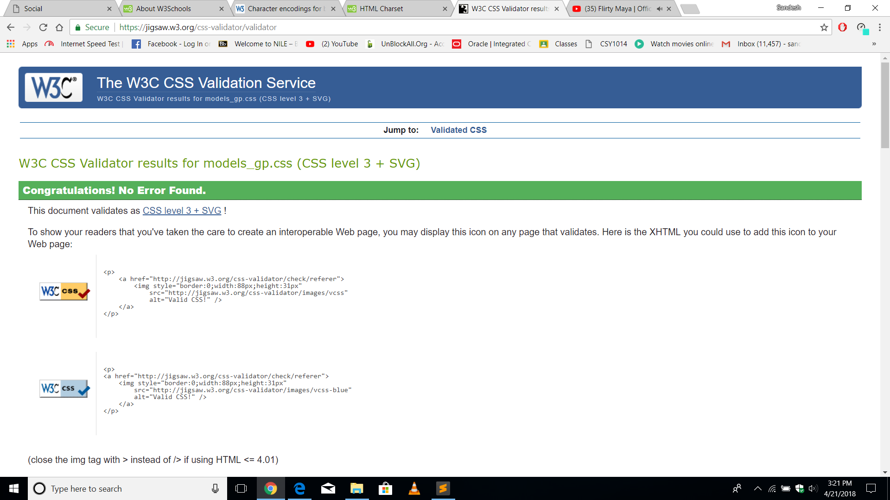